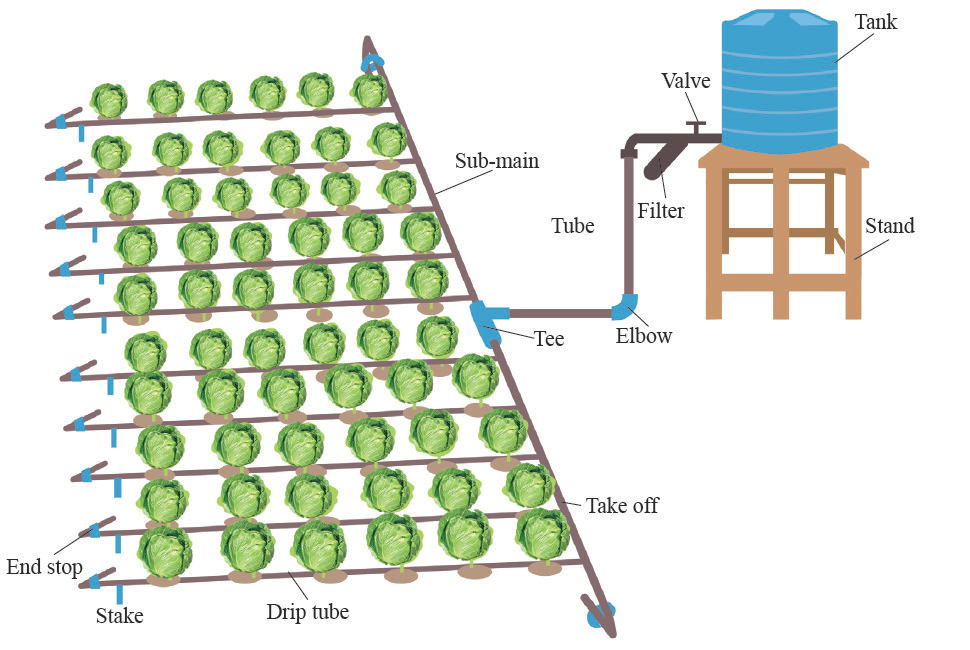

Choice of an irrigation method/system
Choosing the right irrigation method for vegetable crops depends on several factors such as:
The type of the soil: Some methods work better with certain types of soil. For example, furrow irrigation is not suitable for sand soils because it can result into soil erosion and leaching of plant nutrients.
The land’s forms: If the land is flat, a method that spreads water evenly might be best. If the land is hilly, a method that can get water to the top of the hills might be better.
The weather: In areas with lots of rain, you might not need to water your plants as much. In areas with little rain, you might need to water your plants more.
The type of crops: Some crops need more water than others. For example, tomatoes need more water than lettuce.
The availability and quality of water: If you have little clean water, you might go for drip irrigation. If your water is dirty or salty can cause clogging in drip lines and drippers therefore, not good for drip irrigation. Little water cannot support furrow irrigation.
The costs and benefits: Some methods of watering plants can be expensive but economical at watering. Others might be cheaper but not economical.
The amount of work: Some methods require a lot of work to set up and maintain.